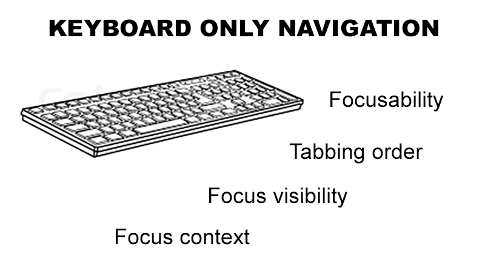

How to code accessible pages from the very beggining.
Even if accessibility is not a requirement at first, do yourself a favor and code the page in a way that will allow you to hook into it and make your accessibility work easier.
Keyboard only navigation
Pages are coded so that users can navigate by means of the keyboard alone. Forget the mouse exists.

Focusability
Use natively focusable elements and don't hide them
Color change is not sufficient (color blind people)
The focus visibility should not intrude regular visitors
Focus context
Since impaired users use the keyboard to navigate through the page, it is important to not lose the focus context. Be warry of keyboard traps and "infinite tabbing".
Modals (make sure the tabbing is limited to the modal content)
Offcanvases
Load more
Asynchronous content changes
Content changes must be announced verbally
If something in the page changes visually, the impaired users have no way to figure this out so it has to be announced verbally to them by the screen reader.
Dropdown state (is it open or is it closed)
Search results (how many results)
Load more results (focus on the next result loaded)
Form errors (use JS to focus on the errors and make sure clicking on each error will focus the cursos on the culprit field)
Screen text
Do not display none the screen text.
You can use roles or you can use text that's invisible to regular users, but visible to screen readers
// Example 1
// Example 2
Elements visible on focus
Use positioning to hide elements when not focused. E.g. Scroll to main content link. Use outline, not border.
Screen size increase
The best way is to change the viewport altogether instead of just the font size.
Media content
Images that are clickable should include info about the action in the alt tag, not what the image looks like.
Limited SVG accessibility.
Canvas and video.
Lessons learnt
Fool proof viewport detector
If there are two ways to do one thing, choose the most accessible one.